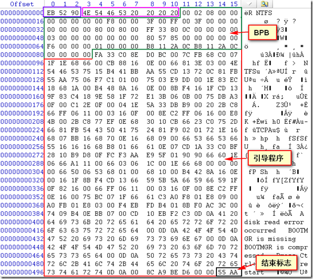

第2节：$Boot文件
$Boot元文件由分区的第一个扇区（既DBR）和后面的15个扇区（既NTLDR区域）组成，其中DBR由“跳转指令”、“OEM代号”、“BPB”、“引导程序”和“结束标志”组成，这里和FAT32文件系统的DBR一样。下图是一个NTFS文件系统完整的DBR。

下面我们分析一下DBR中的各参数
EB 58 90：（跳转指令）本身占2字节它将程序执行流程跳转到引导程序处。
“EB 58 90″清楚地指明了OS引导代码的偏移位置。jump 52H加上跳转指令所需的位移量，即开始于0×55。
4E 54 46 53 20 20 20 20:(OEM代号)这部分占8字节，其内容由创建该文件系统的OEM厂商具体安排。为“NTFS”。
BPB：NTFS文件系统的BPB从DBR的第12个字节开始，占用73字节，记录了有关该文件系统的重要信息，下表中的内容包含了“跳转指令”、“OEM代号”以及“BPB”的参数。
对照上面的BPB分析如下：
02 00：每个扇区512个字节
08：每个簇8个扇区
00 00：保留扇区为0
00 00 00：为0
00：不使用
F8：为硬盘
00 00：为0
00 3F：每磁道63个扇区
00 FF：每柱面255个磁头
00 00 00 3F：隐藏扇区数（MBR到DBR）
00 00 00 00：不使用
80 00 80 00：不使用
00 00 00 00 0C 80 33 FF：扇区总数209728511
00 00 00 00 00 00 00 03：$MFT的开始簇号
00 00 00 00 00 85 57 80：$MFTmirr的开始簇号
00 00 00 F6：每个MFT记录的簇数
00 00 00 01：每索引的簇数
B8 11 2A 0C B8 11 2A 0C：分区的逻辑序列号
引导程序：DBR的引导程序占用426字节，其负责完成将系统文件NTLDR装入，对于没有安装系统的分区是无效的。
结束标志：DBR的结束标志与MBR，EBR的结束标志相同，为“55 AA”。